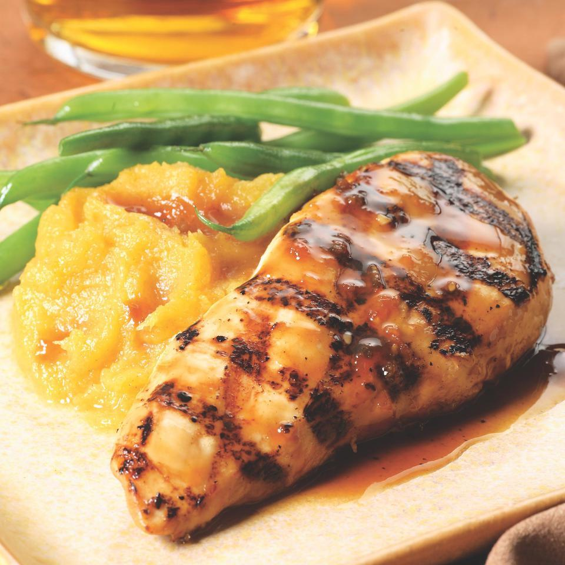

Maple Glazed Chiken with Sweet Potatoes

A very rewarding dish
The other recipes on this project were ridiculously simple. Nevertheless, they were presented because of their nutrients and their praticity to
prepare every day, at any moment you need. But, the Maple Glazed Chicken with Sweet Potatos is the kind of dish you will have to dedicate
some time to cook and the effort will be worth it once you eat it. Here we have, like in the other recipes, food with a great amount of nutrients
and protein, mostly from the chicken, of course. Just enjoy the explosion of flavors provided by the salty taste of the chicken, and the sweetness
of the potatoes and the maple glaze.
Ingredients
- 1,5 pounds sweet potatoes, peeled and cut into 1-inch pieces
- 1 pound chicken tenders
- 2 teaspoons steak seasoning
- half-cup maple syrup
- 2 tablespoons vegetable oil
- half-cup sliced green onions
Instructions
- Place the sweet potatoes into a large pot and cover with water. Bring to a boil over high heat, then reduce heat to medium-low, cover,
and
simmer until tender, about 20 minutes. Drain and allow to steam dry for a minute or two. Mash the potatoes, and set aside.
- Sprinkle chicken tenders with steak seasoning; heat the oil in a large skillet over medium heat, and cook the chicken tenders until the
meat is lightly browned and no longer pink inside, 5 to 8 minutes per side. Remove the chicken, and set aside. Stir the maple syrup
into the skillet, scraping up and dissolving any browned flavor bits from the skillet. Bring to a boil, simmer for 2 minutes, and stir in
the green onions.
- To serve, place the mashed sweet potatoes onto a serving platter, top with the chicken tenders, and pour the maple sauce over the chicken.